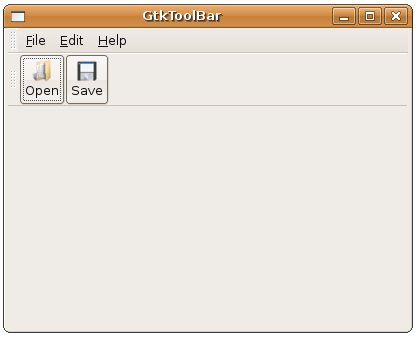

GtkToolBar
可以讓您製作工具列，將一些常用指令群組並依使用者需求而顯示於使用介面上，要建立GtkToolBar，只要使用gtk_toolbar_new()函
式，要插入一個項目，則使用gtk_toolbar_insert()，所插入的項目是GtkToolItem的實例，而GtkToolItem可以直接
使用gtk_tool_item_set_tooltip_text()設定提示文字，但若您要設定影像與文字，則必須知道，GtkToolItem是
GtkBin的子類這個事實：
GtkContainer
+----GtkBin
+----GtkToolItem
所以若您要插入影像或文字，或者是其它的元件，例如按鈕等，則要類似 影
像及文字按鈕 中介紹的方式自行處理。
下面的範例，使用 GtkMenuBar、GtkMenu 與 GtkMenuItem 中的範例為基礎，加上了工具列的功能，其中關於GtkToolBar設定相關的部份，已使用粗體字加以標示：
#include <gtk/gtk.h>
void itemPressed(GtkMenuItem *menuItem, gpointer data) {
g_print("%s\n", data);
}
GtkWidget* createFileMenuItem() {
GtkWidget *rootFileItem;
GtkWidget *fileMenu;
GtkWidget *openMenuItem;
GtkWidget *saveMenuItem;
GtkWidget *closeMenuItem;
rootFileItem = gtk_menu_item_new_with_mnemonic("_File");
fileMenu = gtk_menu_new();
openMenuItem = gtk_menu_item_new_with_label("Open");
saveMenuItem = gtk_menu_item_new_with_label("Save");
closeMenuItem = gtk_menu_item_new_with_label("Close");
gtk_menu_shell_append(GTK_MENU_SHELL(fileMenu), openMenuItem);
gtk_menu_shell_append(GTK_MENU_SHELL(fileMenu), saveMenuItem);
gtk_menu_shell_append(GTK_MENU_SHELL(fileMenu),
gtk_separator_menu_item_new());
gtk_menu_shell_append(GTK_MENU_SHELL(fileMenu), closeMenuItem);
gtk_menu_item_set_submenu(GTK_MENU_ITEM(rootFileItem), fileMenu);
g_signal_connect(GTK_OBJECT(openMenuItem), "activate",
G_CALLBACK(itemPressed), "Open ....");
g_signal_connect(GTK_OBJECT(saveMenuItem), "activate",
G_CALLBACK(itemPressed), "Save ....");
g_signal_connect(GTK_OBJECT(closeMenuItem), "activate",
G_CALLBACK(gtk_main_quit), NULL);
return rootFileItem;
}
// 建立一個內含按鈕、文字與圖片的GtkToolItem
GtkToolItem* createToolItem(gchar *stock_id, gchar *text) {
GtkToolItem *open;
GtkWidget *box;
GtkWidget *label;
GtkWidget *image;
GtkWidget *button;
open = gtk_tool_item_new();
gtk_tool_item_set_tooltip_text(open, "Open File..");
box = gtk_vbox_new(FALSE, 0);
image = gtk_image_new_from_stock(stock_id, GTK_ICON_SIZE_SMALL_TOOLBAR);
label = gtk_label_new(text);
gtk_box_pack_start(GTK_BOX(box), image, FALSE, FALSE, 0);
gtk_box_pack_start(GTK_BOX(box), label, FALSE, FALSE, 0);
button = gtk_button_new();
gtk_container_add(GTK_CONTAINER(button), box);
gtk_container_add(GTK_CONTAINER(open), button);
return open;
}
int main(int argc, char *argv[]) {
GtkWidget *window;
GtkWidget *menubarBox;
GtkWidget *toolbarBox;
GtkWidget *vbox;
GtkWidget *menubar;
GtkWidget *toolbar;
gtk_init(&argc, &argv);
window = gtk_window_new(GTK_WINDOW_TOPLEVEL);
gtk_window_set_title(GTK_WINDOW(window), "GtkToolBar");
gtk_window_set_default_size(GTK_WINDOW(window), 400, 300);
menubar = gtk_menu_bar_new();
gtk_menu_bar_append(menubar, createFileMenuItem());
gtk_menu_bar_append(menubar, gtk_menu_item_new_with_mnemonic("_Edit"));
gtk_menu_bar_append(menubar, gtk_menu_item_new_with_mnemonic("_Help"));
vbox = gtk_vbox_new(FALSE, 0);
menubarBox = gtk_handle_box_new();
gtk_container_add(GTK_CONTAINER(menubarBox), menubar);
gtk_box_pack_start(GTK_BOX(vbox), menubarBox, FALSE, FALSE, 0);
toolbar = gtk_toolbar_new();
gtk_toolbar_insert(GTK_TOOLBAR(toolbar),
createToolItem(GTK_STOCK_OPEN, "Open"), 0);
gtk_toolbar_insert(GTK_TOOLBAR(toolbar),
createToolItem(GTK_STOCK_SAVE, "Save"), 1);
toolbarBox = gtk_handle_box_new();
gtk_container_add(GTK_CONTAINER(toolbarBox), toolbar);
gtk_box_pack_start(GTK_BOX(vbox), toolbarBox, FALSE, FALSE, 0);
gtk_container_add(GTK_CONTAINER(window), vbox);
g_signal_connect(GTK_OBJECT(window), "destroy",
G_CALLBACK(gtk_main_quit), NULL);
gtk_widget_show_all(window);
gtk_main();
return 0;
}
執行的結果如下所示：

|
|